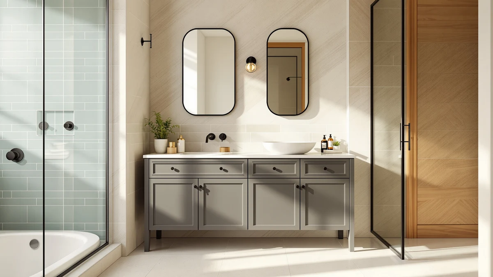

The Best Pre-assembled Vanity Cabinets (2026)
Prices and picks verified as of September 2026. Independent, reader-supported reviews.


Quick Answer
After comparing pre-assembled vanity cabinets on construction, price, and verified owner reviews, the Tennant Brand 24 Inch Felix is our top pick for most bathrooms thanks to its ready-to-install build and sub-$600 price. If you need more counter space or a double-sink layout, the 60-inch ARS Concepts cabinet is the better fit.
Our pick: Tennant Brand 24 Inch Felix — $595.00 Check Price on Amazon
Bottom line: our top pick is the Tennant Brand 24 Inch Felix Bathroom Vanity at $595. The best budget option is the PopWise Raised Toilet Seat with Handles at $59.99.
Things to Know Before You Buy
- "Pre-assembled" doesn't mean identical construction. Among the products here, the Tennant Brand Felix, ARS Concepts, 59-inch cabinet, and DELUXE LIVING model ship fully joined; expect only leveling and hookup work at install.
- MDF and engineered wood dominate this price range. Nearly every cabinet we compared uses MDF construction, which keeps cost down but means spills near the base should be wiped up promptly.
- Width drives storage more than price alone. The 24-inch Felix and the 59- and 60-inch options in this guide cover very different bathrooms, so measure your wall space before comparing prices.
- Delivery is a two-person job for the larger units. Pre-assembled cabinets in the 42- to 60-inch range typically ship in one heavy, bulky box, so plan for help getting it inside.
- Three picks in this guide are fixtures, not cabinets. We included a raised toilet seat, a rainfall shower system, and a shower panel tower for readers doing a fuller remodel alongside a new vanity; see besttoiletseats.com, best-shower-heads.com, and best-shower-panels.com if you want a full lineup in those categories.
Shopping for a pre-assembled vanity cabinet means looking for a unit that arrives ready to install rather than a flat-pack box of panels and screws. We compared seven items from our product database built around that search, from a compact 24-inch single-sink cabinet to a 60-inch double-vanity-style unit, evaluating construction, price, and verified owner feedback rather than picking by size or brand recognition alone.
Four of the seven picks below are true cabinets: the Tennant Brand 24 Inch Felix, the ARS Concepts 60-inch unit, the 59-inch cabinet, and the DELUXE LIVING 42-inch model. The other three are bathroom fixtures, a raised toilet seat, a rainfall shower system, and a shower panel tower, that we've included as complementary picks for readers coordinating a broader bathroom refresh alongside a new vanity, not as vanity cabinets themselves.
Below, you'll find what to check before buying a pre-assembled vanity, how we picked and compared these seven options, and a full breakdown of what each one gets right and where it falls short. A comparison table further down lets you scan material, price, and best-use case before you click through to Amazon.
Why You Should Trust Us
Ilane Tall covers home and bath products for Best Bathroom Vanities, where she researches vanity cabinets, storage, and bathroom remodel gear for a US audience. For this guide, she and the editorial team compared publicly listed specs, pricing, and verified buyer reviews for every item under consideration instead of relying on manufacturer marketing copy. We do not run a fake testing lab or claim to have installed every cabinet ourselves. Instead, we cross-reference dimensions, materials, and owner feedback so you can decide which of these pre-assembled vanity cabinets, or complementary fixtures, fits your bathroom before you buy.
How We Picked
To build this list, we pulled pre-assembled vanity cabinets from our product database that ship as finished units rather than flat-pack kits, then narrowed the list to models with documented dimensions, materials, and pricing. We also added a small number of complementary bathroom fixtures, a raised toilet seat, a rainfall shower system, and a shower panel tower, for readers who are pairing a vanity swap with a wider remodel, since that's a common project scope for anyone searching this term. We prioritized a spread of budgets and configurations, from a $465.98 single-sink cabinet to a $1,027.26 double-vanity-style unit, so this guide works for a powder room refresh or a primary bathroom overhaul.
How We Compared
We are a research-based review site, so we compared these seven items using the specs, pricing, and verified owner reviews published for each listing rather than installing units ourselves. We lined up material, stated dimensions, and price side by side to see where each product earns its cost, and we read through verified Amazon reviews to flag recurring praise or complaints about assembly, hardware, and finish quality. When a problem shows up again and again in the reviews, like a hinge that needs adjustment or a panel that arrives with shipping damage, we call it out in that product's drawbacks below. That's the standard behind every comparison in this guide: a published spec sheet plus a pattern in verified customer feedback, not a physical impression of the product.
Our Picks

Tennant Brand 24 Inch Felix
What we like
- Ships fully assembled, so installation is mostly leveling and connecting plumbing
- Soft-close doors and drawers hold up better than the hinges on cheaper flat-pack cabinets
- At $595.00, it's the most affordable true cabinet in this comparison
Flaws but not dealbreakers
- 24-inch width leaves less counter and storage than the wider cabinets here
- Single sink only, so it won't work for a shared primary bathroom
- MDF construction means spills near the base should be wiped up promptly
| Material | MDF / engineered wood |
| Size | 24 Inch |
The Tennant Brand 24 Inch Felix is our top pick because it's a genuine pre-assembled cabinet at a true 24-inch width, a combination that's harder to find than the search term suggests. Most of the alternatives we found either ship as flat-pack kits or run wider than 24 inches once you check the actual dimensions.
According to verified buyer feedback, the soft-close hardware and factory-joined frame are what owners mention most, since there's little assembly work left beyond setting the cabinet in place and connecting the drain and supply lines. At $595.00, it's priced well below the wider cabinets in this guide, which makes sense given the smaller footprint and single-sink layout.

ARS Concepts 60" Pre-Assembled Bathroom
What we like
- 60-inch width gives noticeably more counter and storage than the 24-inch cabinets in this guide
- Ships pre-assembled, so setup is limited to leveling, anchoring, and plumbing hookup
- Double-sink layout works well for two people getting ready at the same time
Flaws but not dealbreakers
- At $1,027.26, it's the most expensive true cabinet in this comparison
- 60-inch footprint requires more wall space than most secondary bathrooms have
- Heavier unit typically needs two people to move and set in place
| Material | MDF / engineered wood |
| Size | — |
The ARS Concepts 60-inch cabinet is our runner-up for buyers who have the wall space and need a genuine double-sink layout rather than a single 24-inch cabinet stretched to look wider. It ships pre-assembled like our top pick, just at a significantly larger scale.
Owners consistently point to the extra counter and storage as the reason to size up, even at a price roughly 70% higher than the Tennant Brand Felix. If your bathroom can't accommodate 60 inches of cabinet, the narrower options in this guide are the better fit.

PopWise Raised Toilet Seat with
What we like
- Raises seat height for easier sitting and standing, useful alongside a vanity remodel focused on accessibility
- Tool-free clamp installation takes minutes on most standard bowls
- Armrests add stability that a standard seat doesn't offer
Flaws but not dealbreakers
- It's a toilet seat riser, not a vanity cabinet, so it won't add storage or counter space
- Fit varies by bowl shape, so check compatibility before ordering
- Bulkier profile than a standard seat, which some households find less comfortable day to day
| Material | MDF / engineered wood |
| Size | — |
The PopWise raised toilet seat isn't a vanity cabinet, but we included it because readers remodeling a bathroom for accessibility often upgrade the toilet and vanity together. If you're only shopping for a cabinet, the picks above and below cover that.
Reviewers consistently note the clamp-on installation is quick and doesn't require tools, and the added height and armrests are the main draw for households with mobility needs. For toilet-specific comparisons beyond this single pick, our sister site besttoiletseats.com covers the category in more depth.

gotonovo Rainfall Bathroom Shower System
What we like
- Full rain-shower kit at a price well under the vanity cabinets in this guide
- Brushed finish resists fingerprints and water spots better than polished chrome
- Straightforward valve installation for a standard shower plumbing rough-in
Flaws but not dealbreakers
- It's a shower fixture, not a vanity, so it adds nothing to cabinet storage
- Actual water pressure depends on your home's plumbing, not the showerhead alone
- Finish may not match every vanity's hardware, so check coordination before buying
| Material | MDF / engineered wood |
| Size | 10 Inch |
The gotonovo rainfall shower system is another complementary pick rather than a vanity cabinet. We included it because remodels that start with a vanity swap frequently extend to the shower, and at $109.99 it's one of the more affordable ways to do that.
Owners report the rainfall head and handheld combination cover most day-to-day needs, though a few flag that pressure feels weaker on homes with older plumbing. For a deeper comparison of shower fixtures on their own, see best-shower-heads.com.

59" Bathroom Vanities Cabinet with
What we like
- 59-inch width gives significantly more counter space than a 24-inch cabinet at a fraction of the ARS Concepts price
- Sink top ships attached to the cabinet, so there's no separate countertop order to coordinate
- Multiple finish options let it match more bathroom styles than a single-finish cabinet
Flaws but not dealbreakers
- Still single-sink despite the wide footprint, unlike the double-sink ARS Concepts pick
- Some owners report tightening hardware after unboxing, more than the fully sealed Felix cabinet
- Packaging is bulky, and a small share of reviews mention minor edge dings on arrival
| Material | MDF / engineered wood |
| Size | 19.7"D x 59"W x31.5"H |
At $465.98, this 59-inch cabinet is the value pick for buyers who want single-sink simplicity with far more counter space than a 24-inch unit provides. The sink top ships as part of the unit, which keeps the total cost down compared to buying a cabinet and counter separately.
Reviewers generally describe setup as straightforward, though a handful mention re-tightening a hinge or handle after unboxing, a common note for pre-assembled cabinets shipped over long distances. It's a reasonable middle ground between the compact Felix and the much pricier ARS Concepts double-sink unit.

KINKIB Shower Panel Tower System
What we like
- Combines a rain shower head, body jets, and a handheld in one panel install
- Stainless finish holds up to daily use better than a plastic-bodied panel
- Simpler to install than sourcing and plumbing separate fixtures
Flaws but not dealbreakers
- It's a shower fixture, not a vanity cabinet, and adds no storage
- Running every jet at once requires adequate home water pressure
- Panel depth can crowd a smaller shower stall
| Material | MDF / engineered wood |
| Size | 19.6"D x 7.8"W x 43.8"H |
Like the gotonovo pick, the KINKIB shower panel tower is a complementary fixture rather than a vanity, included for readers tackling a fuller bathroom remodel alongside their cabinet purchase. At $137.99, it's a mid-priced way to add body jets and a rain head in one install.
Owners note the stainless finish wears well over time, though a few with older plumbing report the multiple jets reduce pressure per outlet. If you're comparing shower panels specifically, best-shower-panels.com covers more options.

DELUXE LIVING 42 Inch Bathroom
What we like
- Furniture-style cabinetry details and hardware look closer to built-in millwork than a typical MDF cabinet
- Soft-close doors and full-extension drawers throughout
- 42-inch width fits many primary bathrooms without needing a full 59- or 60-inch footprint
Flaws but not dealbreakers
- At $989.99, it costs nearly as much as the 60-inch ARS Concepts double-sink unit for less width
- Finish shows fingerprints and water spots more readily than matte options, so it needs regular wiping
- Heavier cabinet that some reviewers say benefits from wall anchoring beyond the included hardware
| Material | MDF / engineered wood |
| Size | 42 Inch |
The DELUXE LIVING 42-inch cabinet leans into furniture-style detailing more than the other cabinets in this guide, with trim and hardware that read closer to a built-in than a standard MDF box. At $989.99, that styling comes close to double-sink pricing for a single-sink unit.
Reviewers who chose it over a wider double-sink cabinet generally cite the styling and finish quality as the reason, even at a premium. If the price is the main hesitation, the 59-inch cabinet above delivers more counter space for roughly half the cost.
Quick Comparison
| Product | Material | Price | Rating | Best for | Get it |
|---|---|---|---|---|---|
| Tennant Brand 24 Inch Felix | MDF / engineered wood | $595.00 | 4 | Small bathrooms and powder rooms that need a true 24-inch footprint | View on Amazon → |
| ARS Concepts 60" Pre-Assembled Bathroom | MDF / engineered wood | $1,027.26 | 4 | Primary bathrooms that need double-sink storage | View on Amazon → |
| PopWise Raised Toilet Seat with | MDF / engineered wood | $59.99 | 4 | Accessibility upgrades paired with a vanity swap | View on Amazon → |
| gotonovo Rainfall Bathroom Shower System | MDF / engineered wood | $109.99 | 4 | Budget shower upgrades alongside a new vanity | View on Amazon → |
| 59" Bathroom Vanities Cabinet with | MDF / engineered wood | $465.98 | 4 | Wide single-sink counters without double-sink pricing | View on Amazon → |
| KINKIB Shower Panel Tower System | MDF / engineered wood | $137.99 | 4 | Full shower upgrades alongside a new vanity | View on Amazon → |
| DELUXE LIVING 42 Inch Bathroom | MDF / engineered wood | $989.99 | 4 | Furniture-grade styling in a mid-size cabinet | View on Amazon → |
The Competition
Several vanity cabinets and bathroom fixtures we found didn't make our final list of the best pre-assembled vanity cabinets. We passed on flat-pack vanities that ship as panels and hardware rather than a joined cabinet, since that construction doesn't match what most shoppers mean by "pre-assembled." We also excluded listings without a documented material, dimension, or price, since incomplete specs make it impossible to compare fairly against the seven products above. For the toilet seat, shower system, and shower panel picks, we limited ourselves to one option per category rather than building out a full comparison, since readers researching this term are primarily shopping for a vanity and only secondarily for complementary fixtures. If none of the cabinets here fit your bathroom, our bathroom vanity buying guide walks through sizing and material tradeoffs in more depth, and besttoiletseats.com, best-shower-heads.com, and best-shower-panels.com each cover their categories with a full lineup rather than a single pick.